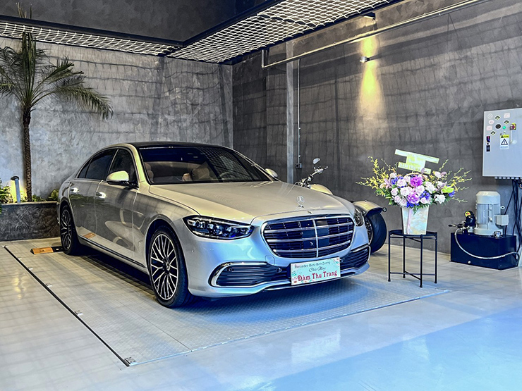

Cũng trong trong khuôn khổ sự kiện, bộ đôi S-Class thế hệ thứ 7 (W223) đã được ra mắt ngay trong chủ đề mở đầu “Luxury. Sophisticated”: Mercedes-Benz S 450 L và Mercedes-Benz S 450 L Luxury. Trong đó, phiên bản Mercedes-Benz S 450 L Luxury nhận được rất nhiều sự quan tâm của khách hàng khi được bổ sung hàng loạt trang bị công nghệ cao mới. S-Class không chỉ là linh hồn, trái tim mà còn là đại diện của những gì quyến rũ nhất tỏa ra khi nhắc đến Mercedes-Benz. Thừa hưởng đặc tính này, Mercedes-Benz S 450 L Luxury cũng thu hút mọi ánh nhìn ngay từ những phút giây đầu tiên bằng sự quyến rũ rất riêng của mình.
Tinh hoa của ngôn ngữ Sensual Purity (Sự gợi cảm thuần khiết)
Ngay từ phần đầu xe, khách hàng có thể nhận thấy sự thay đổi của Mercedes-Benz S 450 L Luxury mới so với phiên bản tiền nhiệm. Cụ thể, phần lưới tản nhiệt đã được đổi thành loại 4 nan đơn: 3 nan đơn ngang và 1 nan đơn dọc ở vị trí trung tâm lưới.
Sự đột phá trong ngoại thất của Mercedes-Benz S 450 L Luxury còn được phô trương qua cụm đèn trước với thiết kế sắc sảo hơn. Đèn sử dụng công nghệ Multi-Beam LED với dải đèn LED chiếu sáng ban ngày. Đây là hệ thống đèn thông minh, có thể bật/tắt từng vùng của đèn pha chủ động và tự động điều chỉnh vùng chiếu sáng tối ưu trên từng điều kiện mặt đường, không làm chói mắt người đi cùng chiều cũng như ngược chiều di chuyển.
Mercedes-Benz S 450 Luxury mang đến một không gian yên tĩnh, vô cùng rộng rãi. Không chỉ vậy, nhờ cách bố trí thông minh, không gian cho hàng ghế sau cũng rất thoải mái, đủ chỗ cho 3 người lớn. Cửa sổ trời Panoramic siêu rộng tạo sự gần gũi với thiên nhiên, rất tiện lợi khi hành khách muốn tận hưởng những cơn gió trong lành từ bên ngoài
Hướng đến một mẫu xe hoàn mỹ từ mọi giác quan, nội thất Mercedes-Benz S 450 L Luxury tràn ngập những chất liệu hàng đầu như ốp nội thất phối sợi kim loại, ốp bệ trung tâm màu đen Crystal-Look và da Nappa cao cấp.
Hệ thống giải trí trên phiên bản này được đánh giá cũng rất hiện đại, đúng tầm với phân khúc mà xe hướng tới. Các trang bị giải trí bao gồm: Hệ thống giải trí đa phương tiện thế hệ mới MBUX với màn hình OLED 12.8 inch, hệ thống giải trí cao cấp cho hàng ghế sau MBUX High-End, máy tính bảng tích hợp điều khiển MBUX cho hàng ghế sau, 2 tai nghe không dây cao cấp, tính năng điều khiển cử chỉ MBUX, hệ thống âm thanh cao cấp Burmester® 3D surround,…
Đằng sau sự điềm tĩnh, uy nghi ấy là khối động cơ xăng I6, dung tích công tác 2999 (cc) có sức mạnh vượt trội, có công suất cực đại 270 kW [367 hp] tại 5500 – 6100 vòng/phút, mô-men xoắn cực đại 500 Nm tại 1600 – 4500 vòng/phút. Sức mạnh của động cơ này được truyền qua hộp số tự động 9 cấp 9G-TRONIC, hệ dẫn động cầu sau. Theo số liệu của nhà sản xuất, trong điều kiện tiêu chuẩn, xe có thể bứt tốc từ 0-100 km/h chỉ trong 5,3 giây và đạt vận tốc tối đa 250 km/h.
Một yếu tố góp phần vào khả năng vận hành của phiên bản cao cấp dòng S-Class là hệ thống treo khí nén AIRMATIC, giảm xóc điều khiển biến thiên liên tục tùy theo điều kiện đường, hệ thống lái Direct-Steer trợ lực điện và tỉ số truyền lái biến thiên theo tốc độ. Nhờ đó mang đến sự đầm chắc, vững tay lái khi vào cua hay khi di chuyển trên đoạn đường gồ ghề, dốc đá. Chưa dừng lại ở đó, động cơ mới của Mercedes-Benz S 450 L Luxury – EQ Boost, giúp xe có thêm sức mạnh khi cần thiết, cũng như giúp xe khởi động một cách êm dịu hơn, Ngoài ra, khi đang chạy trớn (Gliding Mode), người lái chỉ cần chuyển sang chế độ tiết kiệm nhiên liệu (Eco) trên DYNAMIC SELECT, xe sẽ tạm ngắt động cơ xăng, từ đó giúp giảm tiêu thụ nhiên liệu tối ưu mà không ảnh hưởng đến khả năng vận hành của xe.
An toàn và tiện nghi là 2 yếu tố luôn được đặt lên hàng đầu trong các “siêu phẩm” Mercedes-Benz. Và phiên bản Mercedes-Benz S 450 L Luxury cũng không ngoại lệ khi được tích hợp hàng loạt công nghệ hỗ trợ lái thông minh, trang bị tiện nghi hàng đầu, nhằm đảm bảo an toàn tuyệt đối cũng như mang lại sự thoải mái như ở nhà cho mọi hành khách.